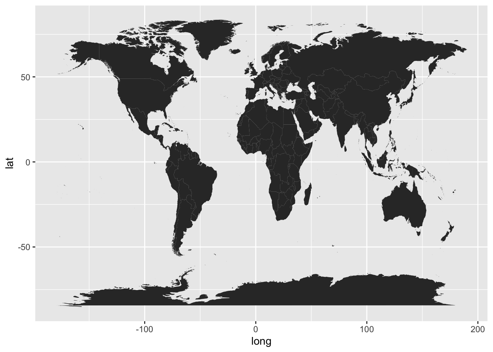
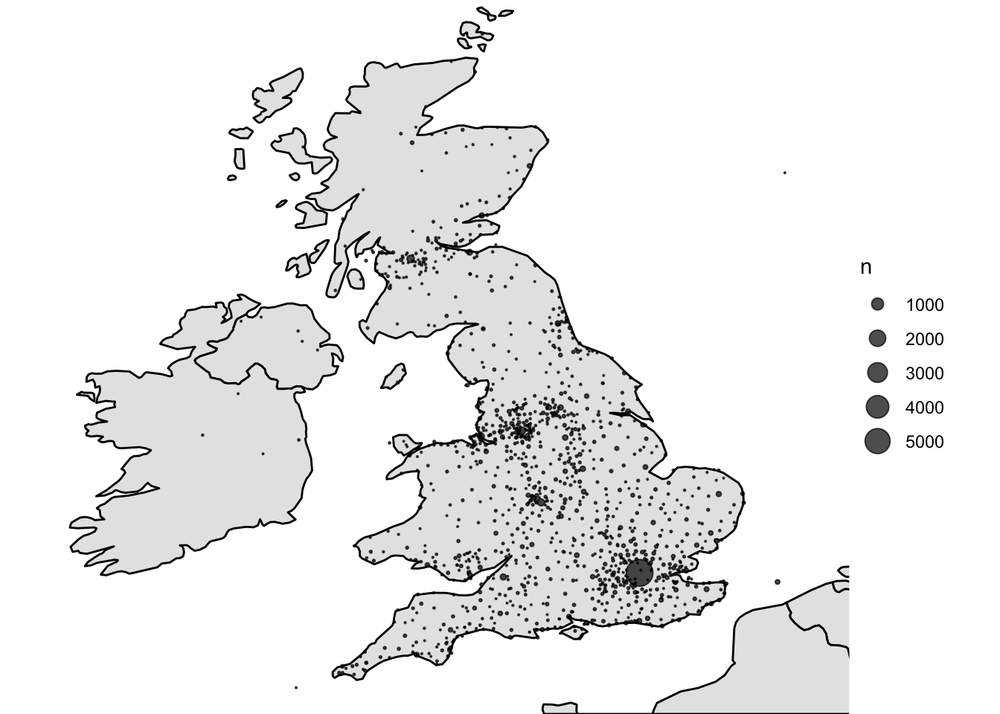
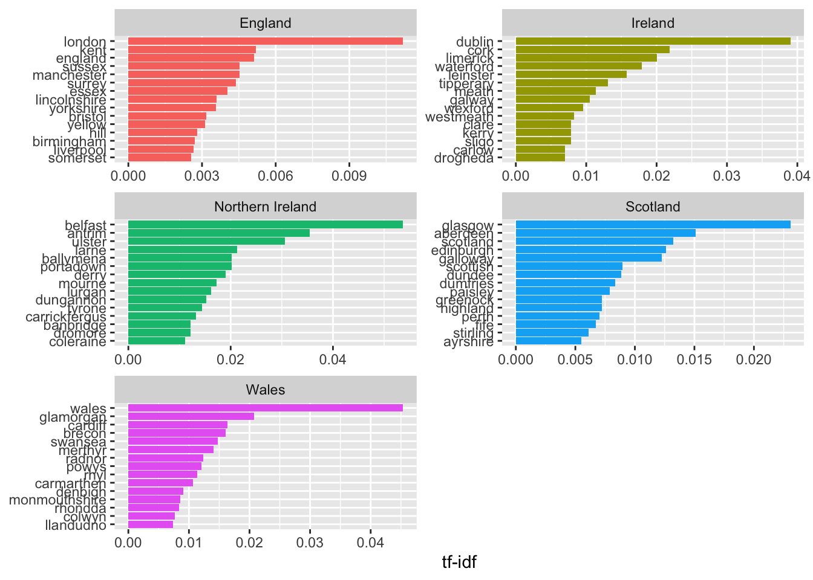
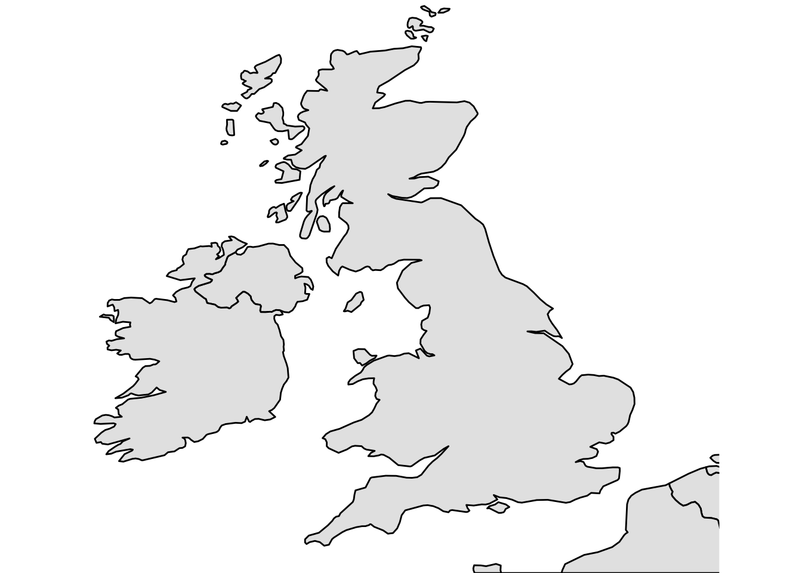
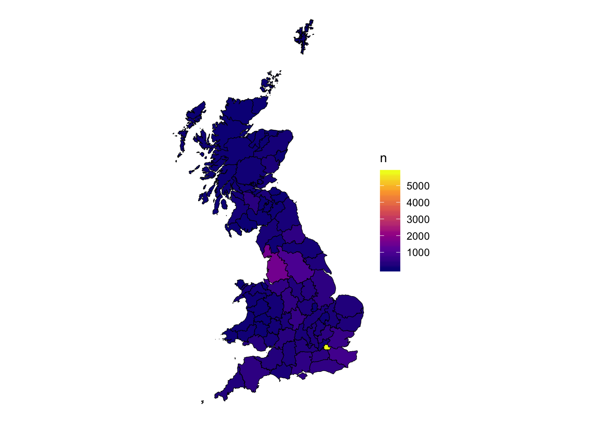

6 Geocode and map newspaper titles
R is also really good for creating maps, both for visualisations and for spatial analysis. Using an openly available list of British Library titles, with some additional coordinate information, it’s possible to very quickly make high-quality, publishable maps.
6.1 A map of British Newspapers by City
To do this we’ll need three things
A background map of the UK and Ireland
A count of the total titles for each city
A list of coordinates for all the cities. This last one is a little trickier than the other two, as I’ll explain.
6.2 Drawing a background map. `
6.2.1 Mapping with ggplot2 and mapdata
The plotting library ggplot2, which is part of the tidyverse package, contains a function called ``map_data()which turns data from the *maps* library. This can then be used to draw a map. First you'll need to install the maps package usinginstall.packages()```.
Next load ggplot2 and the maps library
First create a dataframe called ‘worldmap’ with a function called map_data(). map_data() takes an argument with the name of the map you want to load, in inverted commas. Some of the choices are ‘world’, ‘usa’, ‘france’, ‘italy’. We’ll use the ‘world’ map.
Take a look at the dataframe we’ve created:
## long lat group order region subregion
## 1 -69.89912 12.45200 1 1 Aruba <NA>
## 2 -69.89571 12.42300 1 2 Aruba <NA>
## 3 -69.94219 12.43853 1 3 Aruba <NA>
## 4 -70.00415 12.50049 1 4 Aruba <NA>
## 5 -70.06612 12.54697 1 5 Aruba <NA>
## 6 -70.05088 12.59707 1 6 Aruba <NA>
## 7 -70.03511 12.61411 1 7 Aruba <NA>
## 8 -69.97314 12.56763 1 8 Aruba <NA>
## 9 -69.91181 12.48047 1 9 Aruba <NA>
## 10 -69.89912 12.45200 1 10 Aruba <NA>
## 12 74.89131 37.23164 2 12 Afghanistan <NA>
## 13 74.84023 37.22505 2 13 Afghanistan <NA>
## 14 74.76738 37.24917 2 14 Afghanistan <NA>
## 15 74.73896 37.28564 2 15 Afghanistan <NA>
## 16 74.72666 37.29072 2 16 Afghanistan <NA>
## 17 74.66895 37.26670 2 17 Afghanistan <NA>
## 18 74.55899 37.23662 2 18 Afghanistan <NA>
## 19 74.37217 37.15771 2 19 Afghanistan <NA>
## 20 74.37617 37.13735 2 20 Afghanistan <NA>
## 21 74.49796 37.05722 2 21 Afghanistan <NA>It’s a big table with about 100,000 rows. Each row has a latitude and longitude, and a group. Each region and sub-region in the dataframe has its own group number. We’ll use a function geom_polygon which tells ggplot to draw a polygon (a bunch of connected lines) for each group, and display it.
With the aes(), x tells ggplot2 the longitude of each point, y the latitude, and group makes sure the polygons are grouped together correctly.

Right, it needs a bit of tweaking. First, we only want to plot points in the UK. There’s obviously way too much map for this, so the first thing we should do is restrict it to a rectangle which includes those two countries.
We can do that with coord_fixed(). coord_fixed() is used to fix the aspect ratio of a coordinate system, but can be used to specify a bounding box by using two of its arguments: xlim= and ylim=. These each take a vector (a series of numbers) with two items A vector is created using c(). Each item in the vector specifies the limits for that axis. So xlim = c(0,10) means restrict the x-axis to 0 and 10. The axes correspond to the lines of longitude (x) and latitude (y). We’ll restrict the x-axis to c(-10, 4) and the y-axis to c(50.3, 60) which should just about cover the UK and Ireland.
ggplot() + geom_polygon(data = worldmap, aes(x = long, y = lat, group = group)) +
coord_fixed(xlim = c(-10,3), ylim = c(50.3, 59))
You can also change the ratio of the coordinates using coord_fixed(). The default is 1, but by specifying a different one with the argument ratio =, that can be changed. Using ratio = 1.3 results in a less squashed-looking map.
ggplot() +
geom_polygon(data = worldmap, aes(x = long, y = lat, group = group)) +
coord_fixed(ratio = 1.3, xlim = c(-10,3), ylim = c(50, 59))
A couple more things, which I’ll run through quickly.
We can specify fill and line colors usings fill = and color = inside geom_polygon() but outside aes().
ggplot() +
geom_polygon(data = worldmap, aes(x = long, y = lat, group = group), fill = 'gray90', color = 'black') +
coord_fixed(ratio = 1.3, xlim = c(-10,3), ylim = c(50, 59))
We probably don’t need the grids or panels in the background. We can get rid of these with + theme_void().
ggplot() +
geom_polygon(data = worldmap, aes(x = long, y = lat, group = group), fill = 'gray90', color = 'black') +
coord_fixed(ratio = 1.3, xlim = c(-10,3), ylim = c(50, 59)) +
theme_void()
6.3 Add some points
6.3.1 Get a count of the total titles for each city
This next bit uses some of the functions demonstrated in the introduction to R and the tidyverse, namely group_by() and tally().
First load the rest of the tidyverse packages.
Next, load the title list, which can be dowloaded from the British Library’s Open Repository
We can quite easily make a new data frame, which will just include each location and the total number of instances in the dataset.
location_counts = title_list %>%
group_by(country_of_publication, general_area_of_coverage, coverage_city) %>%
tally()Arranging these in descending order of their count shows how many of each we have:
## # A tibble: 2,189 x 4
## # Groups: country_of_publication, general_area_of_coverage [531]
## country_of_publication general_area_of_coverage coverage_city n
## <chr> <chr> <chr> <int>
## 1 England London London 5781
## 2 Ireland Dublin (Ireland : County) Dublin 415
## 3 Scotland Strathclyde Glasgow 309
## 4 England Greater Manchester Manchester 265
## 5 England West Midlands Birmingham 260
## 6 England Merseyside Liverpool 220
## 7 England Avon Bristol 175
## 8 Scotland Lothian Edinburgh 162
## 9 England South Yorkshire Sheffield 133
## 10 England Nottinghamshire Nottingham 127
## # … with 2,179 more rows6.3.2 Get a list of points.
These coordinates have been produced in cooperation wiht another project with the Library, Living with Machines. We used smart annotations to quickly correct and train
## Warning: Missing column names filled in: 'X1' [1]## Parsed with column specification:
## cols(
## X1 = col_double(),
## Coverage..City = col_character(),
## General.area.of.coverage = col_character(),
## Country.of.publication = col_character(),
## places = col_character(),
## wikititle = col_character(),
## wikilat = col_character(),
## wikilon = col_character(),
## confscore = col_double(),
## candidates = col_character(),
## regionCandidates = col_character(),
## status = col_character()
## )Change the column names:
Change some column names further, select just the relevant columns, change the NA values and get rid of any empty entries.
colnames(geocorrected)[6:8] = c('wikititle', 'lat', 'lng')
geocorrected = geocorrected %>% select(-1, -9,-10, -11, -12)
geocorrected = geocorrected %>%
mutate(country_of_publication = replace(country_of_publication, country_of_publication == 'na', NA)) %>% mutate(general_area_of_coverage = replace(general_area_of_coverage, general_area_of_coverage == 'na', NA)) %>%
mutate(coverage_city = replace(coverage_city, coverage_city == 'na', NA))
geocorrected = geocorrected %>%
mutate(lat = as.numeric(lat)) %>%
mutate(lng = as.numeric(lng)) %>% filter(!is.na(lat)) %>% filter(!is.na(lng))## Warning: NAs introduced by coercion
## Warning: NAs introduced by coercionThis is a dataframe with a set of longitude and latitude points (they come from Wikipedia, which is why they are prefixed with wiki) for every combination of city/county/country in the list of titles. These can be joined to the full title list.
Using left_join() we will merge these dataframes, joining up each set of location information to its coordinates and standardised name. left_join() is a very common command in data analysis. It merges two sets of data by matching a value known as a key.
Here the key is three values - city, county and country, and it matches up the two sets of data by ‘joining’ two rows together, if they share all three of these values. Store this is a new variable called lc_with_geo.
lc_with_geo = location_counts %>%
left_join(geocorrected, by = c('coverage_city' ,'general_area_of_coverage', 'country_of_publication'))If you look at this new dataset, you’ll see that now the counts of locations have merged with the geocorrected data. Now we have an amount and coordinates for each place.
## # A tibble: 10 x 8
## # Groups: country_of_publication, general_area_of_coverage [9]
## country_of_publ… general_area_of… coverage_city n places wikititle lat
## <chr> <chr> <chr> <int> <chr> <chr> <dbl>
## 1 Bermuda Islands <NA> Hamilton 23 <NA> <NA> NA
## 2 Bermuda Islands <NA> Saint George 1 <NA> <NA> NA
## 3 Cayman Islands <NA> Georgetown 1 <NA> <NA> NA
## 4 England Aberdeenshire (… Peterhead 1 <NA> <NA> NA
## 5 England Acton (London, … Ealing (Lond… 1 <NA> <NA> NA
## 6 England Aintree |Merse… Maghull 3 <NA> <NA> NA
## 7 England Alford (Lincoln… Mablethorpe 1 <NA> <NA> NA
## 8 England Alford (Lincoln… Skegness 1 <NA> <NA> NA
## 9 England Alfriston |Eas… Newhaven 1 <NA> <NA> NA
## 10 England Altrincham |Gr… Sale 2 <NA> <NA> NA
## # … with 1 more variable: lng <dbl>Right, now we’re going to use group_by() and tally() again, this time on the the wikititle, wikilat and wikilon columns. This is because the wikititle is a standardised title, which means it will group together cities properly, rather than giving a different row for slightly different combinations of the three geographic information columns.
Now we’ve got a dataframe with counts of total newspapers, for each standardised wikipedia title in the dataset.
## # A tibble: 20 x 4
## # Groups: wikititle, lat [20]
## wikititle lat lng n
## <chr> <dbl> <dbl> <int>
## 1 Abbots_Langley 51.7 -0.416 1
## 2 Aberavon_(UK_Parliament_constituency) 51.6 -3.81 1
## 3 Aberdare 51.7 -3.44 20
## 4 Aberdeen 57.2 -2.11 82
## 5 Abergavenny 51.8 -3.02 9
## 6 Abergele 53.3 -3.58 8
## 7 Abersychan 51.7 -3.06 2
## 8 Abertillery 51.7 -3.13 2
## 9 Aberystwyth 52.4 -4.08 31
## 10 Abingdon-on-Thames 51.7 -1.28 23
## 11 Accrington 53.8 -2.36 33
## 12 Acocks_Green 52.4 -1.82 1
## 13 Adlington,_Lancashire 53.6 -2.60 1
## 14 Aintree 53.5 -2.94 1
## 15 Airdrie,_North_Lanarkshire 55.9 -3.98 13
## 16 Alcester 52.2 -1.88 5
## 17 Aldeburgh 52.2 1.6 5
## 18 Alderley_Edge 53.3 -2.24 4
## 19 Aldershot 51.2 -0.758 20
## 20 Aldridge 52.6 -1.92 1OK, lc_with_geo_counts is what we want to plot. This contains the city title, coordinates and counts for all the relevant places in our dataset. But first we need the map we created earlier.
ggplot() +
geom_polygon(data = worldmap, aes(x = long, y = lat, group = group), fill = 'gray90', color = 'black') +
coord_fixed(ratio = 1.3, xlim = c(-10,3), ylim = c(50, 59)) +
theme_void()
Now we will plot the cities using geom_point() We’ll specify the lc_with_geo_counts as the argument to data = within geom_point(). The x axis position of each point is the longitude, and the y axis the latitude. We’ll also use the argument size = n within the aes(), to tell ggplot2 to size the points by the column n, which contains the counts for each of our locations, and the argument alpha = .7 outside the aes(), to make the points more transparent and slightly easier to read overlapping ones.
One last thing we’ll add is +scale_size_area(). This sizes the points using their radius rather than diameter, which is a more correct way of representing numbers using circles!
ggplot() + geom_polygon(data = worldmap, aes(x = long, y = lat, group = group), fill = 'gray90', color = 'black') +
coord_fixed(ratio = 1.3, xlim = c(-10,3), ylim = c(50, 59)) +
theme_void() +
geom_point(data = lc_with_geo_counts, aes(x = as.numeric(lng), y = as.numeric(lat), size = n), alpha = .7) +
scale_size_area()6.4 Choropleth map
Another type of map is a choropleth. This is where the data is visualised by a certain polygon area rather than a point. Typically these represent areas like parishes, counties or countries. Using the library sf, which stands for Simple Features, a choropleth map can be made quite quickly. A choropleth map uses a shapefile, which is a list of polygons and a projection.
The trick here is to use the coordinates to correctly situate each set of points within the correct county, as found in the shapefile. Then, count up the titles by this corrected county, and use this total to color or shade the map. The good thing about this method is that once the points are correct, they can be situated within any shapefile - a historic map, for example.
This relies on data from (www.visionofbritain.ac.uk).
Download shapefiles for england and scotland from here Turn into sf object Download list of points, turn into sf object Use st join to get county information Join to the title list and deselect everything except county and titles - maybe 19th century only.. Join that to the sf object Plot using geom_sf()
Load libraries
## Linking to GEOS 3.7.2, GDAL 2.4.2, PROJ 5.2.0Next, download (if you haven’t already) the title list from the British Library open repository.
## Parsed with column specification:
## cols(
## .default = col_character(),
## title_id = col_double(),
## nid = col_double(),
## nlp = col_double(),
## first_date_held = col_double(),
## publication_date_one = col_double(),
## publication_date_two = col_double()
## )## See spec(...) for full column specifications.6.5 Make the points object.
Make the points sf object
First, download the relevant shapefiles. These don’t necessarily have to be historic ones. Use st_read() to read the file, specifying its path. Do this for England, Wales and Scotland (we don’t have points for Ireland).
## Reading layer `EW1851_regcounties' from data source `/Users/Yann/Documents/non-Github/sf_experiments/EW1851_regcounties/EW1851_regcounties.shp' using driver `ESRI Shapefile'
## Simple feature collection with 55 features and 6 fields
## geometry type: MULTIPOLYGON
## dimension: XY
## bbox: xmin: 87019.07 ymin: 7067.26 xmax: 655838 ymax: 657543.5
## epsg (SRID): 27700
## proj4string: +proj=tmerc +lat_0=49 +lon_0=-2 +k=0.9996012717 +x_0=400000 +y_0=-100000 +ellps=airy +towgs84=446.448,-125.157,542.06,0.15,0.247,0.842,-20.489 +units=m +no_defs## Reading layer `Spre1890_scocounties' from data source `/Users/Yann/Documents/non-Github/sf_experiments/Spre1890_scocounties/Spre1890_scocounties.shp' using driver `ESRI Shapefile'
## Simple feature collection with 33 features and 7 fields
## geometry type: MULTIPOLYGON
## dimension: XY
## bbox: xmin: 53033.88 ymin: 530297 xmax: 469817 ymax: 1219574
## epsg (SRID): 27700
## proj4string: +proj=tmerc +lat_0=49 +lon_0=-2 +k=0.9996012717 +x_0=400000 +y_0=-100000 +ellps=airy +towgs84=446.448,-125.157,542.06,0.15,0.247,0.842,-20.489 +units=m +no_defsThese shapefiles use points system known as UTM, which stands for ‘Universal Transverse Mercator’. According to wikipedia,
it differs from global latitude/longitude in that it divides earth into 60 zones and projects each to the plane as a basis for its coordinates.
It needs to be transformed into lat/long coordinates, because the coordinates we have are in that format. This is easy with st_transform(). To transform correctly, the correct crs is needed. This is the code for which of the 60 zones this UTM comes from. Britain is 4326.
Bind them both together, using rbind() to make one big shapefile for Great Britain.
Next, load and pre-process the set of coordinates:
## Warning: Missing column names filled in: 'X1' [1]## Parsed with column specification:
## cols(
## X1 = col_double(),
## Coverage..City = col_character(),
## General.area.of.coverage = col_character(),
## Country.of.publication = col_character(),
## places = col_character(),
## wikititle = col_character(),
## wikilat = col_character(),
## wikilon = col_character(),
## confscore = col_double(),
## candidates = col_character(),
## regionCandidates = col_character(),
## status = col_character()
## )Change the column names:
Change some column names further, select just the relevant columns, change the NA values and get rid of any empty entries.
colnames(geocorrected)[6:8] = c('wikititle', 'lat', 'lng')
geocorrected = geocorrected %>% select(-1, -9,-10, -11, -12)
geocorrected = geocorrected %>%
mutate(country_of_publication = replace(country_of_publication, country_of_publication == 'na', NA)) %>% mutate(general_area_of_coverage = replace(general_area_of_coverage, general_area_of_coverage == 'na', NA)) %>%
mutate(coverage_city = replace(coverage_city, coverage_city == 'na', NA))
geocorrected = geocorrected %>%
mutate(lat = as.numeric(lat)) %>%
mutate(lng = as.numeric(lng)) %>% filter(!is.na(lat)) %>% filter(!is.na(lng))## Warning: NAs introduced by coercion
## Warning: NAs introduced by coercionNext, join these points to the title list, so that every title now has a set of lat/long coordinates.
## Joining, by = c("country_of_publication", "general_area_of_coverage", "coverage_city")To join this to the shapefile, we need to turn it in to an simple features item. To do this we need to specify the coordinates and the CRS. The resulting file will contain a new column called ‘geometry’, containing the lat/long coordaintes in the correct simple features format.
Now, we can use a special kind of join, which will join the points in the title list, if they are within a particular polygon. The resulting dataset now has the relevant county, as found in the shapefile.
## although coordinates are longitude/latitude, st_intersects assumes that they are planar
## although coordinates are longitude/latitude, st_intersects assumes that they are planarMake a new dataframe, containing just the counties and their counts.
county_tally = st_counties %>%
select(G_NAME) %>%
group_by(G_NAME) %>%
tally() %>%
st_drop_geometry()## Warning: Factor `G_NAME` contains implicit NA, consider using
## `forcats::fct_explicit_na`Join this to the shapefile we made earlier, which gives a dataset with the relevant counts attached to each polygon. This can then be visualised using the geom_sf() function from ggplot2, and all of ggplot2’s other features can be used.
gb1851 %>%
left_join(county_tally) %>%
ggplot() +
geom_sf(lwd = .2,color = 'black', aes(fill = n)) +
theme_void() +
lims(fill = c(10,4000)) + scale_fill_viridis_c(option = 'plasma')## Joining, by = "G_NAME"## Scale for 'fill' is already present. Adding another scale for 'fill', which
## will replace the existing scale.